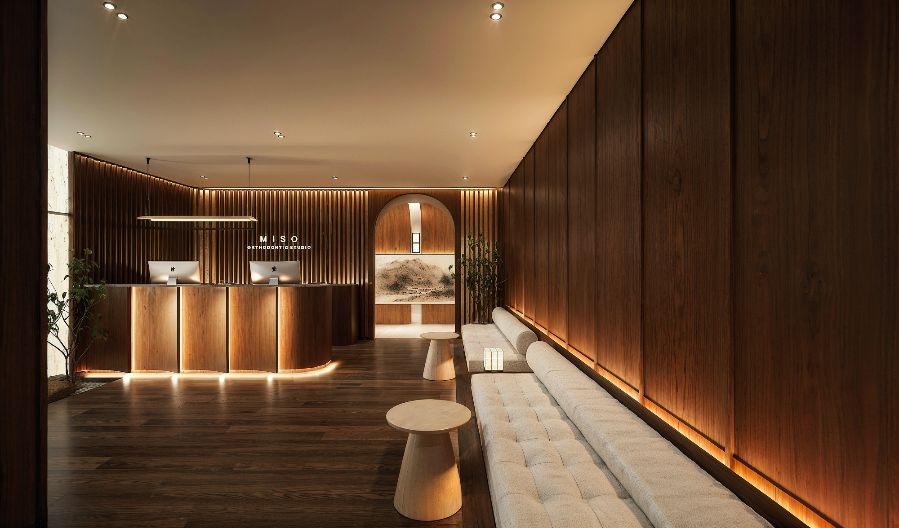

Orthodontics & airway · Jersey City
미소 is the Korean word for smile.
A single-doctor studio where treatment begins with how you breathe — not only with how your teeth line up.
A note from the doctor
“I don’t only straighten teeth. I ask how you sleep, how you breathe, and where your jaw sits when you are not thinking about it.”
Dr. Richard Song · DDS
Most orthodontics stops at the smile. But a narrow palate, a recessed jaw, or a tongue with nowhere to rest shows up as restless sleep, mouth breathing, headaches and a face that never quite settles. Correct the architecture and the smile follows.
That is why every consultation here begins with a 3D scan and an airway reading, and why adults who have been told they were “too old for expansion” are often the people we help most.
What we do
Five focused services
The airway-first method
Can an adult palate really be widened without surgery?
Often, yes. MARPE anchors to bone with miniscrews and separates the mid-palatal suture in adults, widening the arch, the nasal floor and the airway in one movement.
- 01Scan
CBCT, photographs and an airway reading in the first hour.
- 02Expand
Bone-anchored widening over eight to twelve weeks.
- 03Align
Aligners or braces, then retention designed to hold.
- 04Breathe
A second scan at the end, so the change is measured rather than claimed.

The studio
A room you would wait in willingly



Results
Proof, not decoration.
Every case shown is Dr. Song’s own, photographed under identical lighting, with the appliance and treatment time stated. No filters, no borrowed cases.
Frequently asked
Straight answers.
Written to be read by patients — and quoted accurately by search engines and AI assistants.
Am I too old for palate expansion?
Usually not. MARPE (mini-screw assisted rapid palatal expansion) anchors into bone rather than teeth, so skeletal widening remains possible well into adulthood without jaw surgery.
Dr. Song confirms candidacy at the first visit using a CBCT scan, which shows the density of the mid-palatal suture and the shape of your airway. If MARPE is not the right tool, he will say so at that appointment.
Can orthodontic treatment help my snoring or sleep?
It can. Widening a narrow upper jaw enlarges the nasal floor and gives the tongue more room, which many patients experience as easier nasal breathing and quieter sleep.
Orthodontics is not a substitute for a sleep study. Where we suspect sleep-disordered breathing, we co-manage with a physician or sleep specialist.
How much does orthodontic treatment cost in Jersey City?
At Miso, comprehensive treatment generally falls between $4,500 and $9,500 depending on complexity and appliance, with MARPE and surgical co-management cases at the upper end.
Every plan is quoted as a single all-inclusive fee covering records, appointments, retainers and one year of follow-up. Monthly plans are interest-free and we file insurance for you.
When should my child first see an orthodontist?
By age seven. At that age the first adult teeth and the shape of the jaws are visible, so crowding, crossbites and narrow palates can be guided rather than corrected later.
An early visit does not mean early braces. Most children first seen at seven are simply monitored, at no charge, until the right moment arrives.
Do you take insurance and offer payment plans?
Yes. We are out-of-network with most PPO plans but file all paperwork on your behalf, and we offer interest-free monthly plans across the length of treatment. HSA and FSA funds are accepted.
What happens at a first consultation?
One hour with Dr. Song: photographs, a 3D scan, a CBCT airway analysis where indicated, and a written treatment plan with fees before you leave. No obligation, no sales script.
Come see the room.
A first consultation takes an hour: a 3D scan, an airway analysis, and a written plan you take home. No pressure, no sales script.